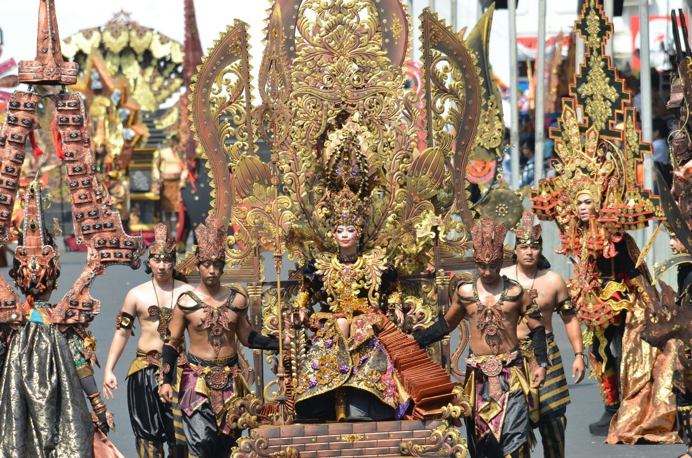

saingi rio de janeiro, jember fashion karnaval akan memeriahkan kota karnaval
Apa yang baru pada gelaran tahun ini?
Dibuat oleh Alexa |
|---|

Jember Fashion Carnaval (JFC) sebagai event karnaval busana tahunan selalu bisa menjadi agenda yang dinantikan dan menggaungkan Wisata Jember. Segala pesona penuh warna yang berwujud atraksi dan kostum adalah daya tarik yang mengundang decak kagum. Tentu saja, tahun ini JFC akan kembali digelar. Apa ya yang baru?
JFC 2017 diluncurkan secara resmi oleh Menteri Pariwista Republik Indonesia, Arief Yahya pada 20 Juli 2017 di Balairung Soesilo Soedarman, Gedung Sapta Pesona, Kemenpar, Jakarta. Dalam acara tersebut juga turut ditampilkan beberapa kostum keren pengukir prestasi di kancah internasional.

Kamu mungkin masih ingat dengan Kezia Warouw yang tampil menawan dengan National Costume “Garuda Unity in Diversity” di Miss Universe 2017. Saat itu Putri Indonesia 2016 tersebut masuk sebagai Top-5 National Costume. Saat peluncuran JFC 2017, Kezia juga ikut ambil bagian. Masih akan ada banyak kostum cantik dengan sederet fiosofinya di JFC ke-16 pada 9 hingga 13 Agustus 2017 mendatang. Tema yang diusung seputar Unity in Diversity atau Bhineka Tunggal Ika.

Ada yang baru pada penyelenggaran kali ini, Kementrian Pariwisata juga meresmikan pemilik pantai indah Papuma tersebut sebagai Kota Karnaval yang disejajarkan dengan destinasi kelas dunia seperti Rio de Janeiro di Brasil. “Semua orang mengakui JFC berkelas dunia. Untuk mewujudkan itu, Kemenpar menetapkan Jember sebagai Kota Karnaval,” kata Arief dilansir dari newsmedia.co.id. Sebelumnya memang kemenangan demi kemenangan sudah diraih oleh JFC dalam berbagai ajang dunia. Indonesia terbukti bisa bersaing dengan puluhan negara lain yang juga mengusung busana nasional.
Kemeriahan JFC sebenarnya sudah bisa dipastikan, di tahun 2014 saja ada 3.073 media dan fotografer hadir dari seluruh dunia untuk meliput. Jalan utama penuh dengan penonton yang ingin melihat kretaifitas anak bangsa. Akun twitter @Kemenpar_RI bahkan menyebutkan jika Jember juga tampil sebagai kota penyelenggara karnaval terbaik ke-3 di dunia. Bangga kan?
Dukungan untuk JFC juga datang dari berbagai pihak, salah satunya adalah Pemerintah Jember. Dilansir dari jemberkab.go.id, akan ada beberapa kebijakan yang diterbitkan seperti pembebasan sejumlah pajak reklame. Hal ini disampaikan oleh Plt Sekretaris sekaligus kepala Badan Pendapatan Daerah Kabupaten Jember, Ir Mirfano. “Jadi, ada beberapa kebijakan bupati soal partisipasi Pemkab Jember untuk JFC 2017 karena event Internasional ini kami yakin akan terselenggara dengan baik jika ada partisipasi dan dukungan semua pihak,” Kata Mirfano.
Jika lancar nantinya untuk pembukaan akan ditampilkan defile berupa penari denga iringan gamelan Sriwijaya dari Sumatera Selatan. Kemudian akan dilanjutkan dengan JFC International Exhibition, JFC International Conference, JFC Kids Carnival, JFC Artwear Carnival, Wonderful Archipelago Carnival Indonesia (WACI), dan ditutup dengan JFC Grand Carnival. Informasi seputar tiket bisa kamu cari tahu di jemberfashioncarnaval.com

festival larung sesaji untuk memberi makan ratu pantai selatan? Maret 2017 di "Event" |

festival petik laut, bentuk ungkapan syukur masyarakat pantai pancer puger Maret 2017 di "Event" |
|---|